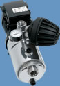

Bomba centrífuga horizontal multietapas con regulación electrónica de variación de velocidad y sensor de presión integrado. Incorpora dispositivo de detección y protección contra trabajo en seco, con reintentos secuenciales de arranque en caso de fallo. Amortigua los golpes de ariete en la instalación. |
 |
 |
• Cuerpo hidráulico en AISI 304.
• Difusores en termoplástico.
• Cierre mecánico en grafito y cerámica, juntas en NBR.
Motor:
• Asincrono 2 polos.
• Protección IP55.
• Aislamiento clase F.
• Protección térmica incluida en el devanado.
• Funcionamiento continuo.
• Carátula con pulsadores para aumentar o disminuir la presión de consigna.